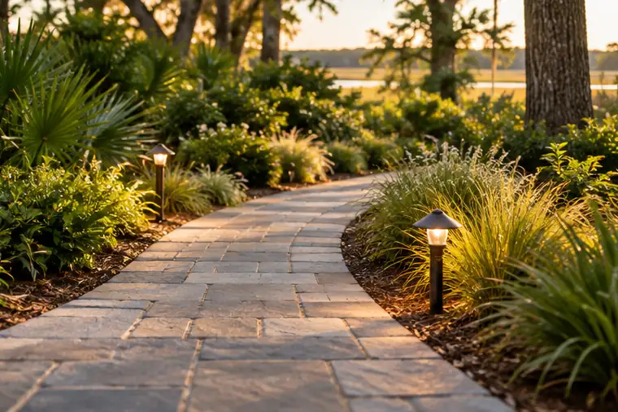
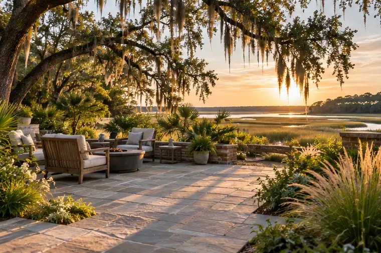
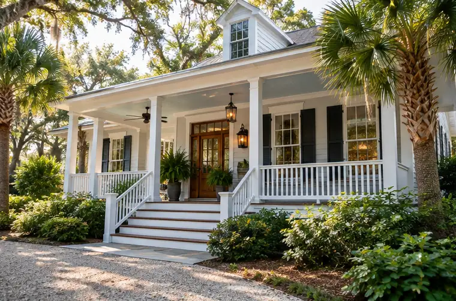
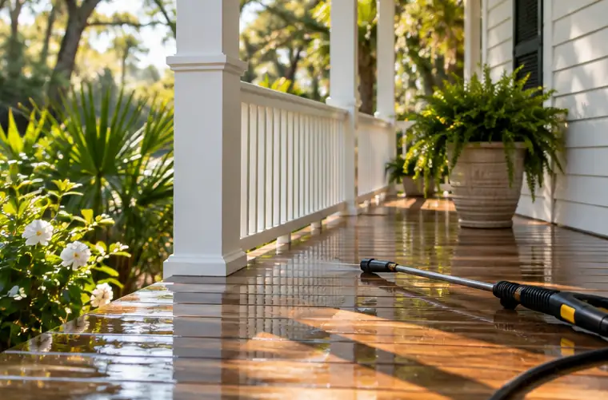

Concept / Home and garden
A path worth taking
A walk can do more than connect two doors. Think about the planting, arrival and feeling of coming home. Illustrated concept only.

From the path to your front door to the patio where everyone gathers, make the outdoors feel like part of home.
Explore outdoor spaces ↗Where do you need shade? How will water move after a heavy rain? Where does everyone end up sitting? Those questions shape a comfortable landscape as much as the materials do.
Explore services ↗
Original generated concept scene; not completed customer work.
A practical plan brings planting, paths and places to gather into one picture.
Consider how people move through the property, where planting belongs and which spaces should connect.
Plan for dining, seating, shade and the connection to the house before choosing the shape and materials.
Give existing beds and walkways a clearer purpose, with plantings considered for sun, moisture and maintenance.

A walk can do more than connect two doors. Think about the planting, arrival and feeling of coming home. Illustrated concept only.

A gathering space considers where the sun lands, where people sit and how the outside meets the house. Illustrated concept only.
Tell us what works, what doesn't and what you'd love to do outside. This fictional preview does not accept inquiries.